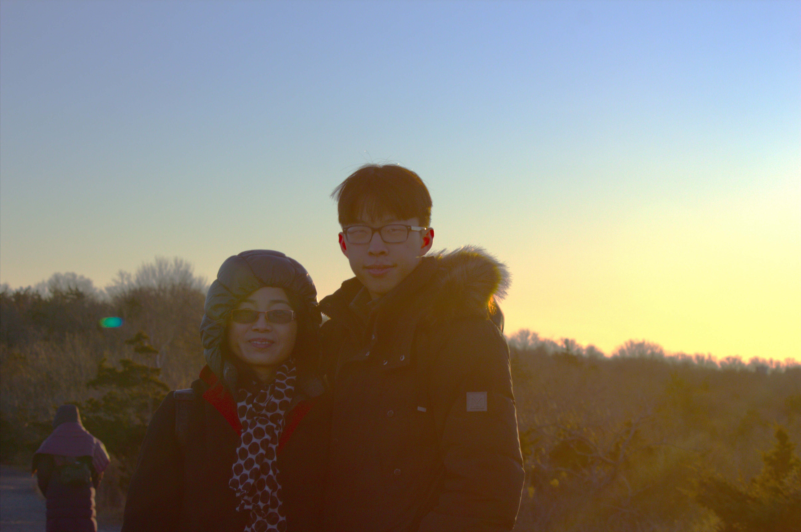
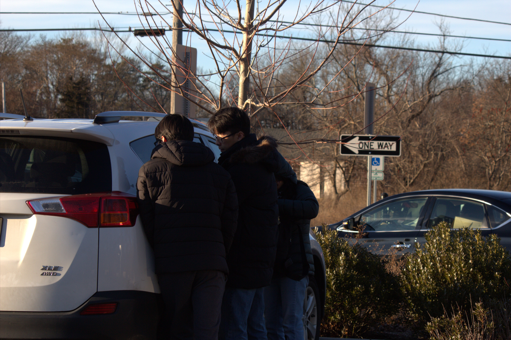
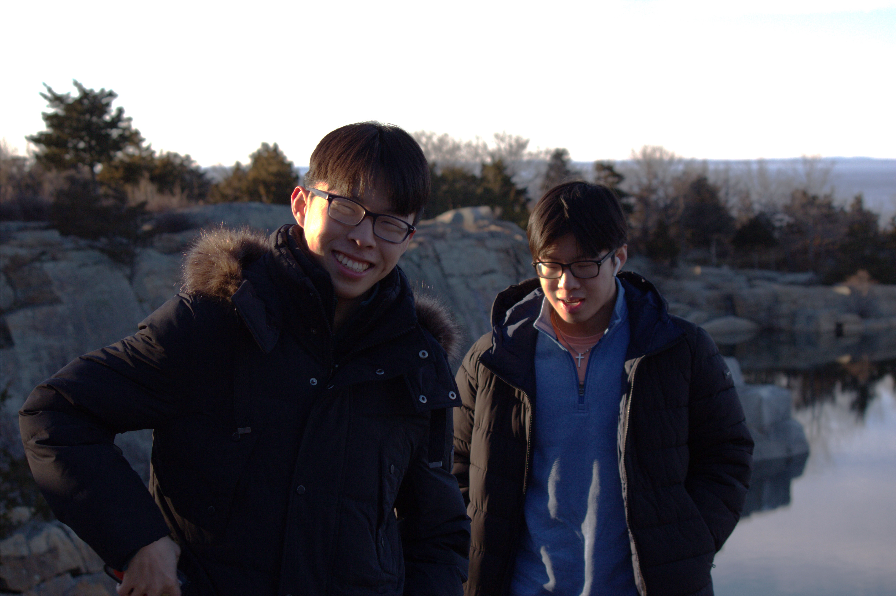
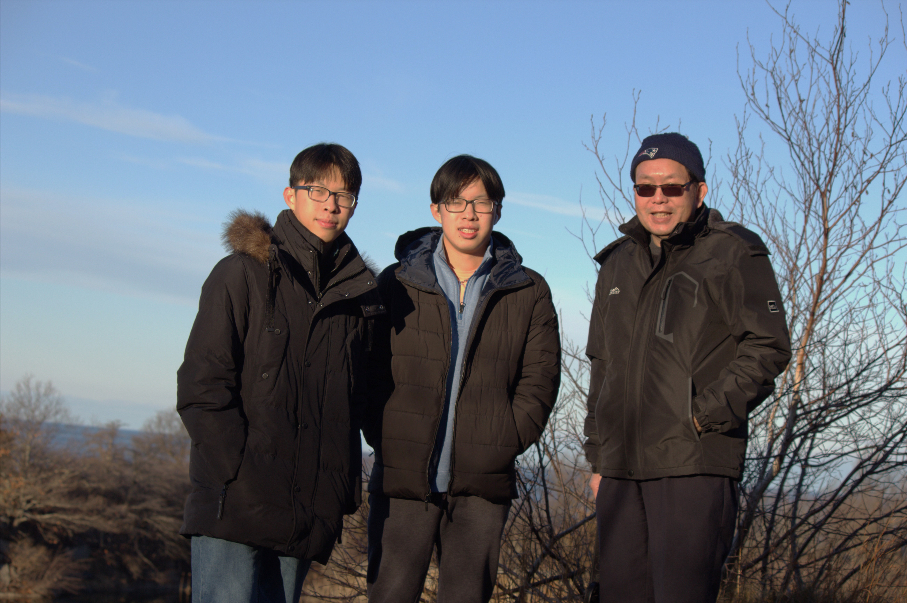
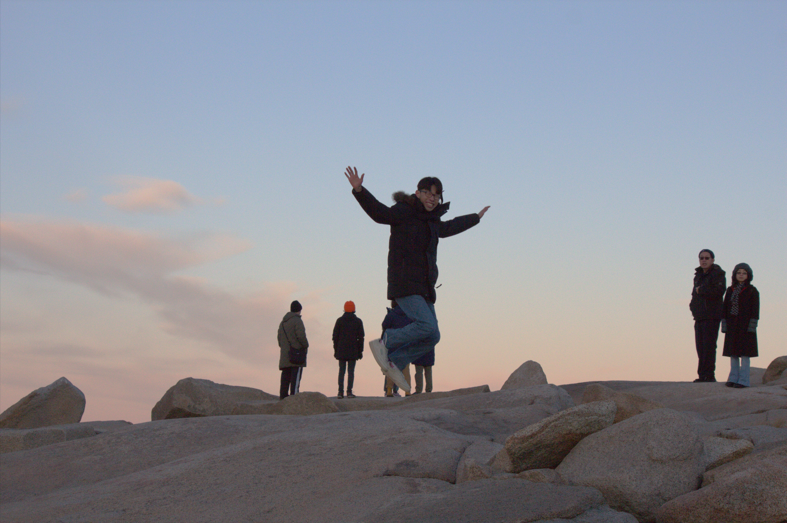

On January 1, 2024, my family and I traveled to Rockport, Massachusetts for a family trip. This is the very first trip I have gone on in the year 2024. This was a way for us to celebrate the New Year and get together to have fun.
Me and Mom.
It was a Monday. January 1st that is. I can't believe it is already 2024. I am 18 years old and already in college. Time really does fly by fast. On this morning, I woke up at around 9 AM to the sound of my parents getting ready for the day ahead. Tired as I had probably slept at 3 AM the night before, I stumbled out of bed half asleep. I made my way to the bathroom, took off my retainers, brushed my teeth, and took a morning shower. I've started taking these recently ever since college started and I have no idea why. Coming out of the shower, I put on a green/black fleece quarter-zip I bought at Khols only the week before. I also put on some jeans I've been wearing for a couple days now. I don't know how long I should be wearing jeans before I wash them because I've only recently started wearing them. At 10:30, I grabbed my water bottle and rushed downstairs to fill up on the breakfast my mom made. I think it was eggs, baozi, and dumplings, but I've already forgot. My brothers did the same and we quickly piled into the car soon after, ready for what awaited.
rougly 1 hour and 25 minutes later...
We have arrived. I didn't realize until I got there, but my family and I had visited the quarry at Hailbut Point State Point, Rockport MA only a couple months ago. Oh, and we traveled with our family friends, Ethan, Evan, and their parents. I hadn't seen them since we all went off for college (except Evan, who is a freshman in high school). It was pretty cold, but I came prepared with my winter coat I brought back from my dorm for winter break. Cold, but good weather (especially compared to Cornell weather :'D).
Me, Mom, and Christopher grabbing gloves to wear for our hike.
Once everyone was ready, we set off. I remember looking up at the sky, observing the lack of clouds in the clear, blue sky. The trees were bare, dead from the cold frost of New England weather. It was beautiful though. As we walked down the familiar path I remember strolling down a couple months prior, I realize that I have really changed these past couple of months. It sure is crazy. As soon we reached the quarry itself, my jaw dropped in awe. The water was so blue, so still. The view was truly breathtaking and we took tons of pictures. Alex brought the family camera so Christopher and I took turns taking pictures of the family with the beautiful quarry in the background.
Me and Christopher in front of the breathtaking quarry.
Me, Christopher, and Dad taking a picture together.
The views were truly breathtaking from the start. Once we finished taking pictures, we hiked around the quarry over to a scenic outlook area above the ocean. The sun was starting to set so it made for some nice pictures. I remember it being very windy the last time we visited, but it was much less so this time around. The views were amazing and we took lots of pictures (as usual), before setting off for the rocks. Down the right of the scenic outlook was a path that took you to the lighthouse. This path was not really a path, but just a bunch of rocks you had to traverse to get to the lighthouse. My family decided to go half way before turning around because it started getting dark and we didn't want to be stuck on the rocks after dark. The rocks were perfect for some amazing pictures, and we came back a different route through a path of thorns. Luckily I wore my jeans so I was fine walking through it all. We walked back to the car just in time before the sun fully set. I had a lot of fun and this trip gave me a fresh breath of air.
One of the pictures Christopher took of me jumping in the air while climbing the rocks.
After that, our two families, together, went to eat dinner at a Taiwanese restaurant and the food there was extremely declicious. I was pleasantly fully afterwards and came home happy. What an exciting and adventurous day!